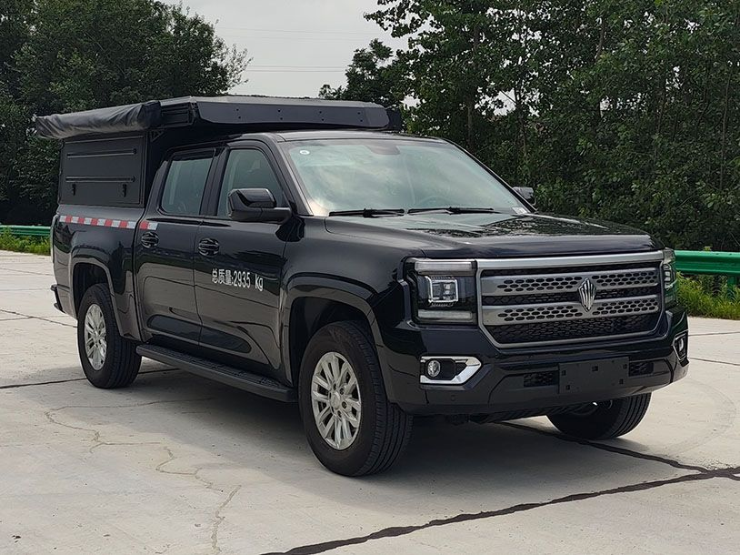

Why "off-road RV" is suddenly everywhere
Two waves hit at once. At the Beijing international RV show this month, Chinese makers rolled out all-wheel-drive expedition models aimed at buyers who want to camp far past the hookups. And on the export side, pickup-based 4×4 motorhomes launched into Russia and CIS markets are pulling dealer attention with prices Western brands can't touch. Underneath both waves sits the same technology story: hybrid and electric drives that promise quiet campsites and days of off-grid power.
We build in this space too — but we'll be straight with you about what each spec on paper does and doesn't guarantee.

Check 1: the chassis class, not the brochure photos
An "off-road" photo means nothing; the tire size and gross weight on the announcement record do. Take our compact camper LYP5030TSY: GVW 2,935 kg, curb weight 2,610 kg, riding on 245/70R17 or 265/65R17/18 tires — proper pickup-class rubber, not van-spec highway tires. Overall length 5,450–5,710 mm, wheelbase 3,270 or 3,470 mm, top speed 175 km/h, powered by a JMC JX4D23A6L diesel (130 kW), China VI. That's a vehicle you can genuinely take down gravel and forest tracks.
Need more room? LYP5041TSY steps up to GVW 3,800 kg on a 3,360 mm wheelbase (215/75R16LT tires, 5,495 mm long, JMC JX4D20A6H 107 kW diesel, 160 km/h) — same idea, more living volume. For a taller hard-wall layout, the LYP5045XLJ1 motorhome runs GVW 4,250 kg with JMC DURATORQ engines from 103 to 128 kW (detailed output per option — contact us for details).
Check 2: drivetrain — ask, don't assume
All-wheel drive is the word of the season, and every show stand says it. Our advice: ask which drivetrain the announcement model actually registers, because body style and chassis options vary by market. We confirm the registered drivetrain for your target country before quoting — if a supplier can't put it in writing, walk away.
Check 3: the off-grid power story (this is where hybrids earn their price)
The real "go anywhere for a week" capability comes from the power system, not just the tires. Two announcement models in our lineup point where the market is heading:
- LYP5070XLJPHEV1 — diesel-electric hybrid motorhome. GVW 7,360 kg, curb weight 6,200 kg, 5,995 × 2,550 × 3,300 mm, wheelbase 3,300 mm, top speed 95 km/h, China VI. A hybrid drive means the engine can double as a generator on site — no noisy separate genset, less fuel burned at camp.
- LYP5060XLJKFEV — all-electric motorhome. GVW 6,495 kg, curb weight 6,085 kg, 5,995 × 2,530 × 3,350 mm, wheelbase 3,360 or 3,600 mm, driven by a 165 kW (or 160 kW) Shaanxi Hande electric motor, top speed 100 km/h. Silent campsites and a big onboard battery — the configuration buyers in eco-resorts and caravan parks keep asking about.
Battery capacity, charging standards and range depend on the final configuration, so for those numbers — contact us for details.

Check 4: homologation and the paperwork that follows you home
An off-road RV is still a road vehicle. Every model named here is a registered MIIT announcement model, which means the design is homologated and the specs are public record — customs clearance paperwork stays straightforward, whether you import one unit or a dealer batch. China VI emission compliance covers the diesel models; we adapt configurations to your jurisdiction before quoting.
The short version
Off-road RV demand is real and the Chinese export supply is getting more capable by the season — pickup-class campers, hybrids and full electrics now sit in one announcement family. Judge every offer on four things: registered tire size and GVW, actual drivetrain, the off-grid power system, and clean homologation papers. Then compare landed prices, not showroom photos.
See all 36 motorhome & camper models WhatsApp us for a quote
Trend references: Chinese RV show coverage and export market reports, November 2026. Vehicle specs: China MIIT announcement records for LINGYANG (凌扬牌) models. Final configuration, drivetrain and power-system details confirmed per order. — HESIN, overseas division of LINGYANG Vehicle Manufacturing.